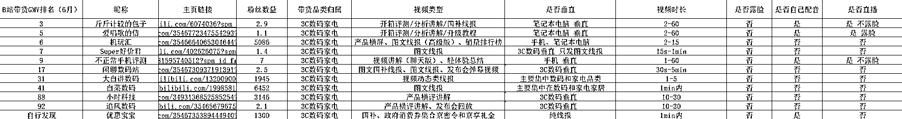

来源：https://ebw2eafswx.feishu.cn/docx/WMqdds5YOo98k4x1LjdcR1Jon2e
大家好，我是小源。 这次主要分享我对B站好物悬赏带货这条超级标的分析拆解以及自己实战操作的一点总结，希望能和大家一起交流共同进步。
我在6月12号看到星主亦仁发布了关于B站好物带货的超级标，在第二天看到了叶凌尘老师发布的细致到极点的B站好物悬赏带货攻略（绝对的神仙圈友），我知道适合我的超级标来了。
我用了3天时间仔细研究叶凌尘老师的帖子（强烈推荐仔细研读10遍以上）和寻找对标账号并分析拆解，最终确定行路路线并在15号开通橱窗，16号发表带货视频。
截止到6月30号，我一共发布了60多个视频，总带货GMV为95822.95元，成交单量为148单，预估佣金为772.74元。算是完成了0到0.1的突破，有了一点正反馈，但是离我的目标还差的很远。
接下来我会仔细描述我从看到消息到决定全力行动，再到取得一点小成绩的激动和对结果不满意的焦虑以及对更高结果的渴望这一心路历程，还有我对已经取得重大结果账号的对标分析拆解。
希望这些分享能帮助到大家，也恳请大家多多批评指正给我一些建议，谢谢。
首先说一下，我并不是完全纯新手开始搞平台好物推荐流带货，我之前有过做知乎好物推荐的经历并且跑通了整个流程，所以我对这类项目有一定的经验，比如怎么绑定PID、怎么根据对标账号探索自己的风格等，只是在形式上由图文变成了视频。
这次的B站好物悬赏带货我有一定的优势和劣势：
在平台做好物推荐类的项目本质是在帮受众群体做消费决策，消费决策是流量和GMV的稳定保障，另外B站上还可以做好价线报，这也是这次项目能快速起手、快速获得正反馈的主要原因。
后面我在拆解对标账号的时候把他们发的视频拆解为7类，但本质上只有两大类：线报和消费决策。
线报类视频不需要你对带货产品有多少了解，只需要知道这是个好价格就可以发了，这类难点是获得线报信息，解决方法也很简单，多关注几个线报类账号，直接抄过来就行了。
消费决策则不一样，需要你有一定的了解，听起来很难，我还需要专门学习吗？当然不需要，我们只需要了解基本的信息然后做信息整合就可以，除非后面你想专业化发展去接商单。
比如你想带货空调，你需要选出来你想带的具体产品，但是你不了解不知道哪些能推荐哪些不能推荐，这就需要你去找头部博主的推荐清单，把他们推荐的型号互相印证一下拿过来自己重新整理一遍然后做成视频。如果你没有一定的了解，你不知道怎么做文案。这不需要你太专业，会信息搜集和信息整合就可以了。
别的品类我不清楚，但如果你是新手入局并且选择3C数码赛道的话可能需要一定的成长时间，我在知乎也是这样走过来的。
这里我有一些建议：
这样能迅速帮助你了解相关产品的信息，这听起来很难很耗时间，但实际上用不了多长时间，因为你不需要成为专家，你只需要会筛选和整理信息就可以了。
当你有一定的了解后你就会做出很棒的消费决策并且能很快抓住热点。
比如你想推荐空调，华凌神机二代肯定不会错；你想推荐笔记本电脑联想来酷斗战者战7000肯定不会错；你想推荐电视海信小墨EQ5 Pro肯定不会错；你想推荐手机小米K系列肯定不会错。。。
这里的核心点是你只需要理解一些基础信息并做出整合同时知道爆款。整合完之后的内容在小白眼里就代表了专业。
我在做知乎的时候，8月份选择入局一个品类，从一件爆款产品入手，在看了好几个头部博主的回答和文章后结合自己的笔风写了第一篇回答，10月份我就写出了一篇关于这个品类的科普和推荐，并被知乎官方双十一专题收录。
而我做的只是信息搜集和整合。
以上内容总结就是：花一点时间成本去头部博主那里搜集信息，整合成自己的内容输出。
前文我晒出了入局15天内的GMV战绩，可以看出除了在6月18号当天抓住了618活动的尾巴靠运气出了两单外接连6天没有出单，这虽然有618活动刚结束的原因，但更多的是我的思路有问题。
这前后巨大的差距其实就是我及时纠正了我的思路，更改了行动路线。
刚开始的时候，我的思路是这样的：
我想以小博大，把选品定在了高佣金率这个方向。因为我在知乎的时候就眼馋别人带货高佣金率产品赚的盆满钵满，这次来到B站我想上来就吃个饱的，选择的都是佣金率较高的品，丝毫没有意识到这些品不太符合B站受众群体，也不和账号实力匹配。比如洗碗机这个品，在B站就很难打开局面，尤其是对于新账号而言。
在第六天的时候我做了两件事：
在认真思考之后我纠正了选品策略和视频方向，不再仅仅局限于高佣金率，而是调整为高关注度。
同时我也在想如果能结合当下相对比较火爆的热点事件，会不会实现流量的飞跃，从而带来订单量的增长？
我不太会寻找热点指数，但我知道这个问题能在知乎、B站、微博以及IT之家找到答案。因为这些平台我都关注了很多3C数码家电的博主。
接下来几天我一边正常更新视频一遍寻找爆点。经过我的多番对比，我判断这两个话题有极大的成功率：小米新品发布会和民航局充电宝新规。
接下来我的重点就放在了这两个话题上，围绕小米新品发布会制作相关新品视频，围绕民航局充电宝新规制作充电宝相关视频。
视频方式也并不复杂，将公开收集的资料整理完后制作成图文PPT式的视频，封面图和视频标题有话题关键词。能成功的关键是这个话题有很高的讨论度，所以我们的视频即使没有营养也会有一定的播放量，也回有订单转化率。
如果你精通视频剪辑，能够制作符合B站观看喜好的视频，你的结果至少会是我的数倍。
调整策略之后的反馈也是来的立竿见影，6.25号订单量就起来了，在6.26那天的GMV达到了最高峰，爆点过去之后就进入了稳定期。
能判断出哪些话题会成为爆点并且能够抓住，那就有很大概率能够成功。
以上是我这次B站好物悬赏带货取得一点反馈的经历和感悟，希望能帮助到大家。不一定适合所有人，恳请批评指正，欢迎和我交流。
我是今年6月6号进入生财有术，进来之前再做小红书虚拟带货和公众号老年情感流量主的项目，前者是刚开始启动，3天出了4单算是还可以，后者是投机取巧博取平台不监管的概率没有博成功。
在进入生财后我遵循了纪钟老师的建议两步走。第一个是“随机熏眼”，多看风向标和精华帖，提升我在信息差的落后并且培养我对机会的认知能力；第二个是“照方抓药”，认真反复研读航海实战中小红书虚拟产品航海手册和其他相关的精华帖，准备在小红书虚拟产品赛道大干一场。
但是，我一直都对星主亦仁的超级标垂涎三尺，因为这是超级机会。
每个我都仔细看了，尤其是iOS应用+付费订阅，因为学会这个后面可以类比到鸿蒙系统APP开发，华为自己的鸿蒙系统走的是iOS的路子，等到系统完善用户量起来绝对是个机会，华为用户的质量和消费意愿我觉得不比iPhone用户差。
但这些都不适合当下的我，我可以长期研究学习，但当下我最需要投入就能立马出结果的项目。还有就是我对AI一窍不通并且天生恐惧。
好在，B站好物悬赏这条超级标来了。
我在2020年的时候做过知乎好物推荐带货，截止到目前共有8W+的带货收入，实际上从2023年以后基本没什么收入了。
我也是B站的活跃用户，经常给一些up主点赞投币，只是从来没想过自己可以当up主，也从来没想过我可以在B站赚钱（再一次感叹信息差的重要性）。
星主亦仁的超级标帖子和叶凌尘老师全方位的教学科普一下子打开了我的任督二脉，这就是我想要的超级标！
在我半个月的实践中，我更加觉得这是适合我们普通人做的好项目，他的天花板可能比当时知乎好物要高，理由如下：
所以我现在全力搞B站好物悬赏带货，我希望能在这个项目完成0到1的突破，我希望自己能挣到人生第一个100万，虽然现在还差的很远，但路已在脚下。
如果你还不知道选择哪个项目，还在纠结。我建议就从B站好物悬赏带货开始吧，极度适合我们这些没有资源和特长的普通人。
B站好物悬赏带货的打法是发视频挂链接从而赚取佣金，那么，核心问题显而易见：视频和货。
无论是虚拟产品、实物电商，还是平台好物推荐，选品都是至关重要的点。不是一直都有句话吗，选品定生死。
这一点叶凌尘老师的帖子有详细说明，B站的用户群体是Z时代年轻人群，平均年龄在27岁左右，一定要选择符合平台调性和用户画像的产品。
这一点我没有经验可以分享，因为我自己也不太会选品。但是我觉得有个很好的思路，那就是仔细研究B站公布的带货榜单，看看他们都是带什么货，尤其是低粉高GMV的账号，我就是这么干的。
如果实在还是纠结不定，先从手机、电脑等3C数码产品开始吧。先行动起来最重要。
这应该是新手圈友最感到无从下手的点，毕竟剪视频怎么也比图文要难。
其实这也很好解决，分析对标账号，看看他们发布的都是什么视频，哪些我们能短时间模仿，哪些我们需要学习一下模仿。
他们已经用这些视频取得成功，达到了百万级和千万级的GMV，我们只需要模仿复制坚持发就可以了。我是这么做的，也取得了文章开头说的0-0.1的突破。我可以，大家肯定也可以。
所以，执行的关键点就是寻找对标账号拆解分析。选品参考他们带的是什么品，视频类型参考他们发布的是什么视频类型，最后进行全方位模仿。我坚信他们能成功我们也可以。
我在寻找对标账号的时候只坚持一个原则 — 低粉高GMV账号。
我认为粉丝数量高的up主的可参考性很低，他们都是有很强的专业能力、粉丝基础和账号权重，模仿难度堪称地狱级。
比如排名前两位的的Mr迷瞪和Wilson学长，迷瞪是B站直播带货顶流，Wilson学长是覆盖知乎、抖音、B站等多个自媒体平台的大佬，这咱咋模仿啊。。
但是低粉高GMV账号就不一样了，我们完全可以模仿学习，当你研究之后你会发现原来整一个能带货的视频竟如此简单。
下面是我对标的账号：


以上截图来自B站官方6月公布的带货GMV排行榜
如果不小心对标了圈友的账号，请联系我删除，抱歉。
将这些账号汇总在Excel表中，我主要关注的点是：
对比分析拆解后汇总如下：

将表格上传到多维表格放在下面，这是我第一次使用多维表格，我看了一下内容是正常的，如果不正常请告诉我，我及时改正。
下面是我看了这些对标账号后总结的八大视频类型，这只是我根据自己的经验和习惯分类总结，仅供大家参考，希望能帮助到大家。
另外实际操作这一栏是根据我目前掌握的工具和能力想出来的解决方法，如果你也是纯新手可以参考一下，如果你是剪辑达人或者能够使用AI那操作这一项对你来说是小菜一碟。
我不知道怎么查看对标账号视频的流量推荐和搜索占比，所以流量这一点写的都是： 推荐和搜索，标题、话题、简介中填写关键词，做好站内SEO优化。
线报类视频是制作最简单的一类，只要知道某个产品是个好价格（最低价最好），就可以把这个信息做成视频分享出来，这在618、双十一、年货节的时候应该会更管用，低价永远会吸引到意向用户。
内容节奏：视频多在20s-40s，没有废话，直奔重点
钩子：用最低价、史低好价、超值价格等词语盯住，吸引观看
流量：推荐和搜索，标题、话题、简介中填写关键词，做好站内SEO优化
转化：评论区挂好物蓝链，在视频中引导点击购买
视频表现：播放量在几十到破万都有，评论从0到破百都有，和产品关系很大
实际操作：
可参考固定话术：
XX商品京东自营原价XX元，现在只需XX元
点击评论区蓝色链接进入购买即可享优惠
具体方法为进入商品详情页
领取XXX优惠券
最后领取XXX国补优惠
最终仅需XX就能拿下
线报类视频可分为图文线报类和视频线报类
图文线报类视频是用几张截图做成图文视频，整个视频只有这几张静止的图片。
优点是制作简单，缺点是比较单调，除非是爆品，不然互动量可能不高。
视频线报类是将背景换成和带货产品相关的视频，这样能增加联动性，视频内容不再单调。
优点是视频和产品一致性好，观感性好，缺点是需要寻找素材。
产品横评类是比线报类视频更高级的一类，通过多个产品横评给出优缺点，最终给出购买建议，信任度和转化度都更高。
内容节奏：视频多在10min-20min，节奏缓慢，重点在于对比讲解
钩子：用相对专业化的内容给观看者一种很专业靠谱的印象，增加信任度
流量：推荐和搜索，标题、话题、简介中填写关键词，做好站内SEO优化
转化：评论区挂好物蓝链，在视频中引导点击购买；引导大家把需求打在评论区，给出定制化推荐同时给出好物链接；此类视频也非常适合接产品植入商单，如果你的一篇横评类长视频火了，可能会有商家联系在视频中植入他们的产品。
视频表现：播放量基本都都能破千，点赞量和评论量基本破百
实际操作：
这是很好吸引流量的一类视频，国补和大促意味着省钱，省钱就意味着流量。
我观察到的有：
内容节奏：视频多在20s-10min，节奏可快可慢，重点在于讲清楚政策
钩子：现在国补政策复杂，一会下线一会上线，不同品类国补政策也不一样；大促活动也比较复杂，现在大家已经反感了，这时候一个总结性视频恰好能get这种需求，这是天然的钩子。
流量：推荐和搜索，标题、话题、简介中填写关键词，做好站内SEO优化
转化：评论区挂活动会场链接和红包链接，在视频中引导点击产看自己地区政策和领红包和礼金，锁定用户
视频表现：播放量基本都都能破千，点赞量和评论量大几十到好几百
实际操作：
开箱评测和升级教程适合有一定专业技能掌握且资金充沛的圈友，通过自费购买、租借等方式拿到具体产品给大家做实物分享以及升级教程，比如给笔记本电脑假装硬盘等。
内容节奏：视频多在3min以上，节奏可快可慢，重点在于讲清楚产品体验感受，可直观也可以客观
钩子：开箱评测能满足探索欲，帮助意向用户搞明白产品重要的点，升级教程类能满足求知欲。
流量：推荐和搜索，标题、话题、简介中填写关键词，做好站内SEO优化
转化：评论区挂好物蓝链，在视频中引导点击购买
视频表现：播放量基本都都能破千，点赞量和评论量大几十到好几百
实际操作：
这类视频可以有实物也可以没实物。
有实物的可以自己购买录制也可以去线下门店录制
没实物的可以手机打开淘宝京东商品详情页用手机的视频录制功能录制视频，也可以一个手机打开商品详情页，另一个手机录制视频，也可以电脑打开商品详情页录制视频。
只要能把商品讲清楚，优缺点说明白，性价比如何、值不值得买等说明白，就会有转化。
内容节奏：视频多在3min以上，节奏可快可慢，重点在于讲清楚产品的优缺点、性价比等，可直观也可以客观
钩子：聊天式视频能拉近人与人的距离，理中客的定位能降低视频的种草性，带货不留痕迹
流量：推荐和搜索，标题、话题、简介中填写关键词，做好站内SEO优化
转化：评论区挂好物蓝链，在视频中引导点击购买
视频表现：播放量、点赞量和评论量不一定，和选择的产品、讲解的风格、文案内容有很大关系。
实际操作：
这类视频会吸引到感兴趣的用户观看，从排行榜中印证自己心仪的商品在不在榜单。
内容节奏：一般分两类，快速过排行榜单类，不讲解，这类视频一般在1-2min；另一种是用榜单结合讲解讲明白这个产品的特点，这类视频一般字10min以上。
钩子：排行榜TOP20、前十名等天然具有吸引力，能够引发好奇心
流量：推荐和搜索，标题、话题、简介中填写关键词，做好站内SEO优化
转化：评论区挂好物蓝链，在视频中引导点击购买
视频表现：这类视频的互动量不好说，主要看品类和发布时间，3C数码类互动量比较高
实际操作：
看到这你是不是觉得挺无语的，没错我自己也是挺无语的，我第一次制作榜单类视频用了4个小时，关键帧都是现学的。所以，拥抱AI吧。
有热度的发布会有很大的流量，比如前段时间的小米YU7，这类发布会的完整回放也会有很多人看；另外就是针对有热度的产品把发布时的弹幕片段剪出来配合弹幕炸了字眼吸引点击观看。
内容节奏：这就没什么节奏能说的了，发布会回放完整上传；弹幕炸了类视频做好封面图。
钩子：感兴趣但没时间看发布会的可能会看回放，好奇产品价格表现的可能会看价格公布时的弹幕
流量：推荐和搜索，标题、话题、简介中填写关键词，做好站内SEO优化
转化：评论区挂好物蓝链并在评论区说明有需要的可以点击看看
视频表现：这类视频的互动量不好说，主要看品类和品牌，小米和华为发布会关注量比较多。
实际操作：
发布会回放类直接同站下载再上传，一个小建议是做好章节分类
弹幕炸了类视频：
这种是视频带货结合直播，用直播给自己做背书并且顺带直播间带货，这种不是123上连接那种纯直播带货，我称之为轻直播带货，可以露脸增加信任度和大家聊天互动，也可以不露脸展示电脑屏幕和大家聊产品。
这个我还没有测试，我觉得是可行的，后面我试过之后再来和大家反馈。
对标分析后，我知道我大概应该发什么类型的视频了，找到了尝试的方向。至此核心的选品和视频类型已经解决，接下来就是全力执行。
说一千道一万，对标分析无数账号，脑子里闪过万千念头，都不如实际走一步，执行力才是关键。
自从我决定开始搞这个项目开始到现在遇到了不少的困境，有资源上的，有心力上的，有操作上的，有反馈上的，一度让我无法正常睡眠，果然想干成一件事太难了。
这是摆在眼前的第一个问题，我没有能带货的B站账号啊。
B站带货账号需要满足两个条件：
想要解决这个问题有两个办法：自己建号刷粉或者直接购买千粉账号。
我询问了一下我在知乎上认识的一个朋友，他帮我解决了这个问题。果然人生永远没有白走的路，你所有的经历和结交的人可能都会在未来某个节点给你帮助。
我最近再一次刷叶凌尘老师帖子的时候看到老师说可以帮助解决这个问题，如果你们难在了这个问题上建议去咨询一下叶凌尘老师。
我首先选择的是上手难度最低的图文线报类视频，不需要自己出镜、不需要自己配音、也不需要寻找复杂的素材，只需要手机截几张图用剪映简称图文视频即可。
但这有个难点，我不知道怎么用AI配音（我确实是个AI盲。。），好在我会搜索，最后我选择了剪映自带的AI配音，将文案输入即可配音，为此我开通了1个月的SVIP会员。
这里需要注意，先要建立文档保存文案，如果你突然觉得需要增减内容，再次配音需要重新输入文案。我就因为这个重新又写了一遍文案。
我不会任何视频剪辑软件，只有在2021年搞抖音中医书单的时候用过剪映混剪视频，本来就没学会多少，现在基本忘完了，至于Pr和达芬奇我都不知道界面长啥样。
图文线报类视频还好说，我想做一个商品销量排行榜视频，可我一点都不会。我就去搜索相关视频教程，现学现用，我才明白了什么是关键帧，我用了4个小时才剪好一个排行榜视频，那一刻我真的感到十分崩溃。
我在7月1号看到郑王铭老师用AI编程做了一个自动化生成带货视频的软件，可以自动化生成销量排行榜类视频，让我对AI提效产生了深刻的认知。
这个问题我还有完全解决，但是我找到了解决方向，那就是通过AI编程做出我想要的自动化软件，解放我的时间。
我也建议大家也学这个，当你实现0到1的突破后一定会用到AI提效的。
我相信这是我们每一个新手探索项目必然会经历的问题，我做了没有反馈该怎么办？
在开头我放的图中可以看出我在6月18号当天也就是开始执行项目后第三天出了两单，随后一直到24号没有出一单，这种反馈几乎可以说没有，直接当头一棒的感觉对我来说。
我的解决方法是对着投稿的每一个视频反复研究，再认真研究对标账号的带货视频，琢磨到底是哪里出了问题。
最后总结可能是选品出了问题，迅速调整品类，追逐当下讨论度较高的产品，然后在后面几天的表现就好很多了。但是这半个月的表现依然离我的预期差距甚远。
因为我之前有过知乎带货的经验和B站微博的关注，所以我很快能找出当下热度较高的产品。这里也建议大家除了在B站本身外也去知乎和微博上关注一些博主，看看他们都发什么，哪些评论区讨论量最大，从而寻找灵感。
短时间没有反馈不要紧，及时分析研究，看看是选品有问题还是视频有问题，迅速做出改变，不断尝试。
心力决定了我们的执行力，执行力决定了我们能否成功。当我们打破了信息差，并且意识到这是一个机会的时候，执行力就是能不能做成和能做多成功的关键。
我觉得我执行力还算可以，从第一天开始我每天都会更新视频，从6月16号我正式开始做到6月结束我投稿了60多个视频，平均每天4个，最多的时候1天8个。我每天下班回家就是找素材剪视频，这半个月我没有社交活动，甚至经常忘了吃晚饭（我是单身独居），我发誓我只有复读那年这么拼过。
高频词更新视频就是不断的尝试各种风格和不同的带货产品，从而总结出适合平台调性的视频，朝这个方向前进。
我这半个月的成绩虽然无法让我满意，但还是有了一点正反馈，不至于让我心力崩掉。只是这其中发生了一件事，让我心力遭受了重创。
某个商品搞了一个低价预约抢购，预约的话会额外赠送福利，我觉得这是个好机会，于是投稿了相关视频，反馈结果也很好，虽然播放量不是很高，但是后台数据显示出了有约100单，我高兴坏了。
但是结果却给了我一拳，正式抢购的时候是别的链接，我这些订单一毛佣金没有，瞬间心情跌落谷底。我把它当做了预售，2021年双十一活动京东大规模采用预售制度，我当时获得过不错的收益，这次也理所应该的带入了，这就是脱离战场太久犯了经验主义错误。
这给我造成了很大的打击，再加上经常性晚上不吃饭爆肝和对成果不满意晚上经常性失眠，在6月的最后一天我绷不住了。
我选择了出去转转，和好友吃顿烧烤喝点啤酒畅谈人生，去KTV点几首高嗓门的歌尽情嚎叫把压力释放出来。
调整好心态，接受已经产生的结果并且依然保持野心，下半年还有双十一还有年货节，下半年的国补也快来了，仍然还有突破自我的机会。
我所有的视频都是手搓，只有图文线报类视频用过AI配音，我不会使用AI工具，我是个AI盲。
当下最火的是AI，星主亦仁提到最多的是AI，生财有术视频号对话系列坤汀老师和每一期嘉宾对话的主题都是AI，8条超级标7条是AI相关，唯一不是AI强相关的B战好物悬赏带货也会用到AI。
另外，我也看到了太多AI提效的案例。郑王铭老师用AI开发了能一键生成图文线报类视频和销量排行榜视频的软件，大大提升效率，获得近一年最多投锚的Zero老师用AI实现了全流程自动化，把以前10个小时的工作量压缩到半个小时，这样的例子不胜枚举。
下面是星主亦仁最新的动态 ：AI会让我们产生质变
所以，必须要学习AI。
等我将AI用在B站好物悬赏带货项目并取得成效的时候，我再来和大家分享。
能被星主亦仁标记为超级标的请相信一定是超级机会，除非你比他更成功。
别人可以做到，也请相信自己可以做到。
所以，如果你还没有项目还在纠结干什么好，请从B站好物悬赏带货开始吧，这是最容易入手的超级标。
这条超级标是家蒙老师提供的，家蒙老师的起步是知乎好物带货，赚了他人生的第一个100万。
巧的是，知乎好物我也干了，但是我没有赚大钱的想法和野心。家蒙老师是2020年3月份开始，我是2020年6月份开始，时间晚了三个月，但结果差了几十倍。
我在挣到第一笔钱的时候高兴坏了，原来这真的能赚钱啊，立马喊哥们去喝酒，一个月两三千让我无比满足，甚至来年双十一这一个活动我挣了近4W也只是感到不可思议，一直到知乎好物不行的时候，我都没有放大赚更多钱的想法，我没有赚大钱的野心。
你的野心会激发你的执行力，会增加你的心力，请有赚大钱的野心。
你我可能都不是天才，但日拱一卒也终会能成功。
我在纪钟老师那里学到了两句话，现在送给大家。一句是“普通人赚钱最快的方式是掌握信息差”，另一句是“信息差+执行差=可能成功”
信息差星主亦仁已经帮我们打破了，执行差看我们自己。
我知道很多人在等航海实战，我也在等，但是没做过参加航海和做过参加航海完全是两码事，请行动起来吧。
最后，希望这篇文章能给大家提供帮助，也恳请大家给我批评指正，我们共同交流共同进步。